Frame 0 — 2 detection(s)
0.455 marine mammal
bbox: 2011,293 → 2209,374 (198×81px)
merged with: whale:0.14
0.066 whale
bbox: 2106,307 → 2204,361 (98×54px)
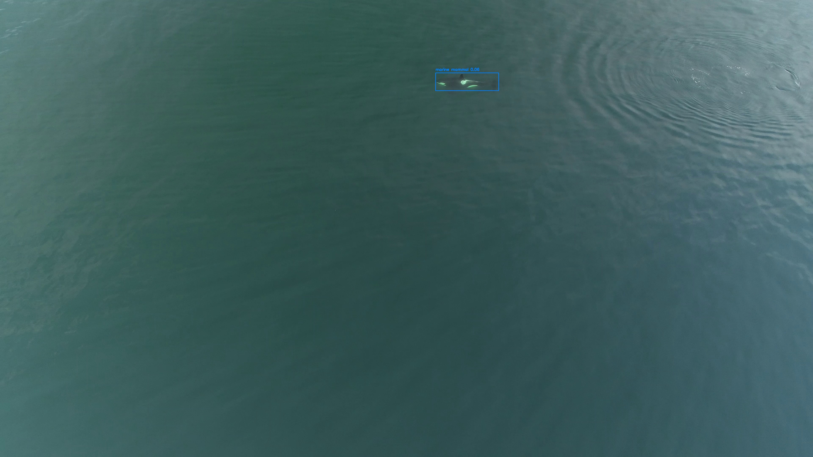
Frame 15 — 1 detection(s)
0.058 marine mammal
bbox: 2057,344 → 2355,428 (298×84px)

Frame 30 — 1 detection(s)
0.165 marine mammal
bbox: 2022,321 → 2343,405 (321×84px)
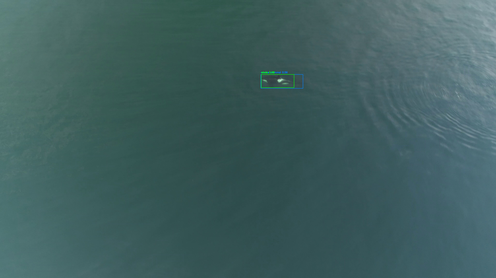
Frame 45 — 1 detection(s)
0.560 marine mammal
bbox: 2019,578 → 2345,686 (326×108px)
merged with: whale:0.08

Frame 60 — 1 detection(s)
0.407 whale
bbox: 2063,837 → 2338,938 (275×101px)
merged with: marine mammal:0.07
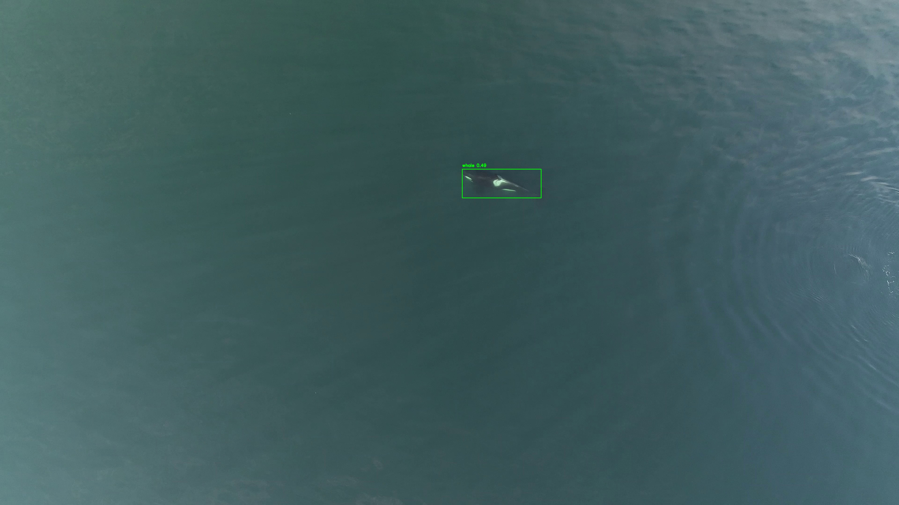
Frame 75 — 1 detection(s)
0.485 whale
bbox: 1974,723 → 2311,846 (337×123px)

Frame 90 — 2 detection(s)
0.581 marine mammal
bbox: 1913,608 → 2278,817 (365×209px)
merged with: whale:0.18
0.055 marine mammal
bbox: 3671,1187 → 3721,1300 (50×113px)
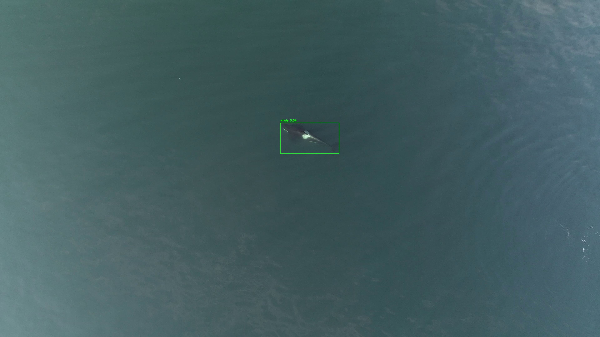
Frame 105 — 1 detection(s)
0.644 whale
bbox: 1794,787 → 2170,984 (376×197px)

Frame 120 — 1 detection(s)
0.382 whale
bbox: 1727,429 → 2114,651 (387×222px)
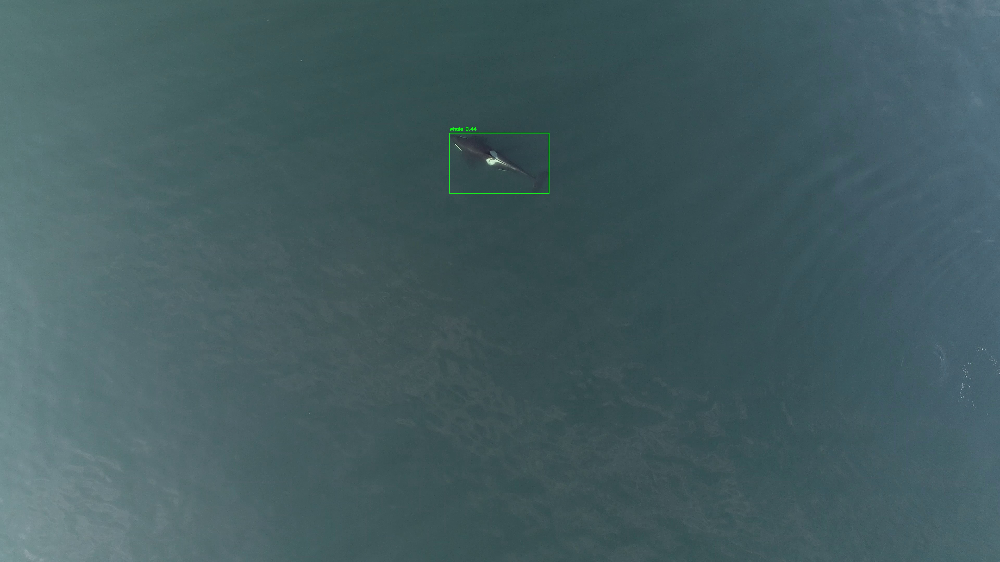
Frame 135 — 1 detection(s)
0.437 whale
bbox: 1726,511 → 2108,743 (382×232px)

Frame 150 — 1 detection(s)
0.265 whale
bbox: 1761,507 → 2144,750 (383×243px)
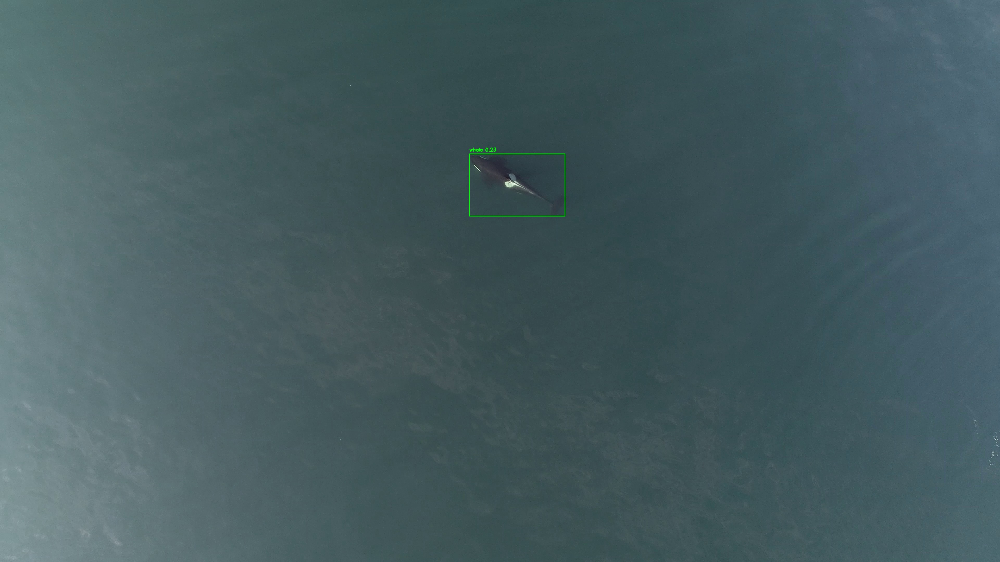
Frame 165 — 1 detection(s)
0.227 whale
bbox: 1802,591 → 2169,830 (367×239px)

Frame 180 — 1 detection(s)
0.239 whale
bbox: 1848,688 → 2210,931 (362×243px)
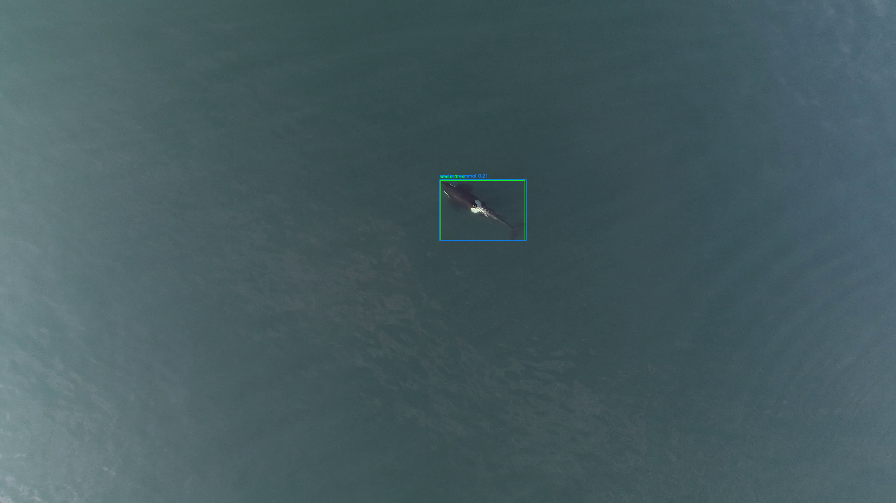
Frame 195 — 1 detection(s)
0.458 whale
bbox: 1886,774 → 2249,1032 (363×258px)
merged with: marine mammal:0.21

Frame 210 — 1 detection(s)
0.122 whale
bbox: 1883,781 → 2241,1044 (358×263px)

Frame 270 — 1 detection(s)
0.591 whale
bbox: 1776,645 → 2064,873 (288×228px)
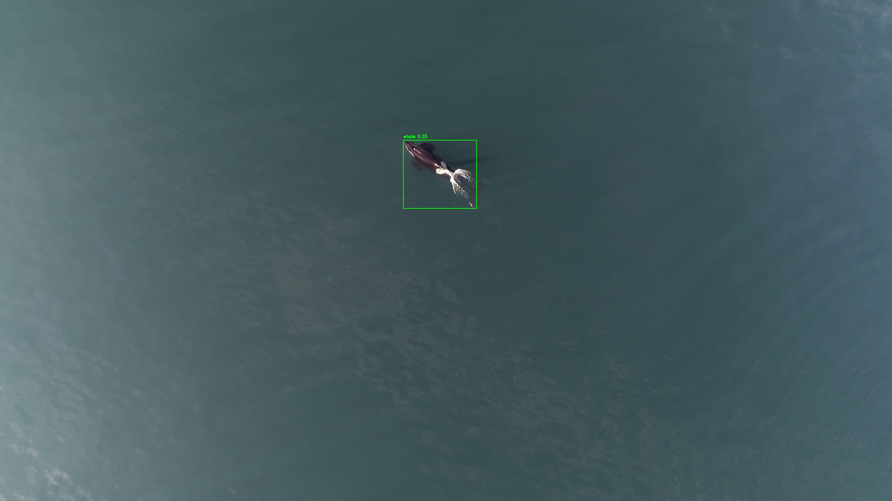
Frame 285 — 1 detection(s)
0.350 whale
bbox: 1736,604 → 2051,898 (315×294px)

Frame 300 — 1 detection(s)
0.113 whale
bbox: 1696,556 → 2041,847 (345×291px)
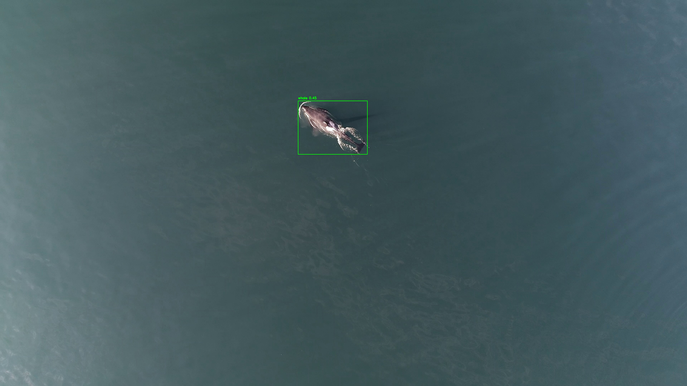
Frame 315 — 1 detection(s)
0.446 whale
bbox: 1666,564 → 2053,863 (387×299px)

Frame 330 — 1 detection(s)
0.364 whale
bbox: 1653,577 → 2091,913 (438×336px)
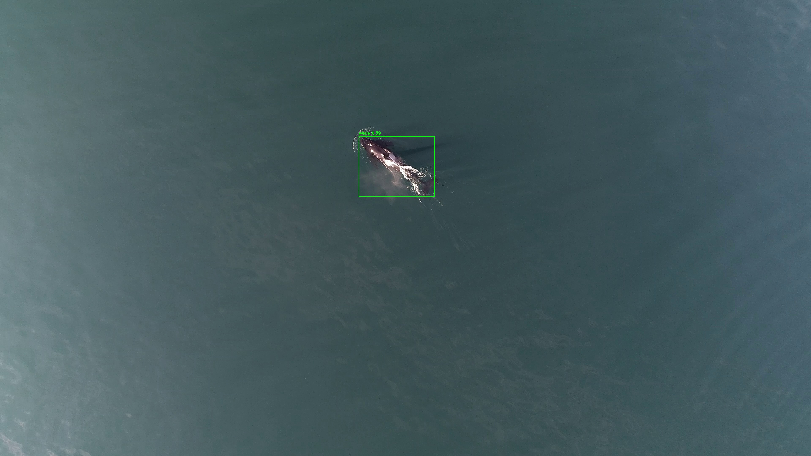
Frame 345 — 1 detection(s)
0.587 whale
bbox: 1699,646 → 2057,931 (358×285px)

Frame 360 — 1 detection(s)
0.381 whale
bbox: 1709,660 → 2091,965 (382×305px)
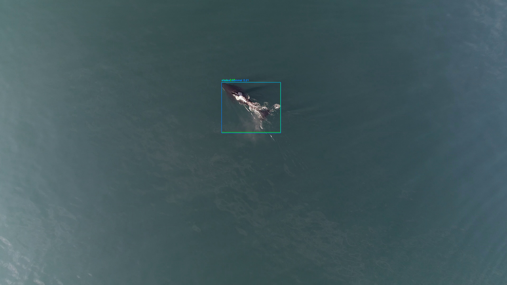
Frame 375 — 1 detection(s)
0.276 whale
bbox: 1678,623 → 2124,1002 (446×379px)
merged with: marine mammal:0.21

Frame 390 — 1 detection(s)
0.372 marine mammal
bbox: 1625,567 → 2031,870 (406×303px)
merged with: whale:0.11
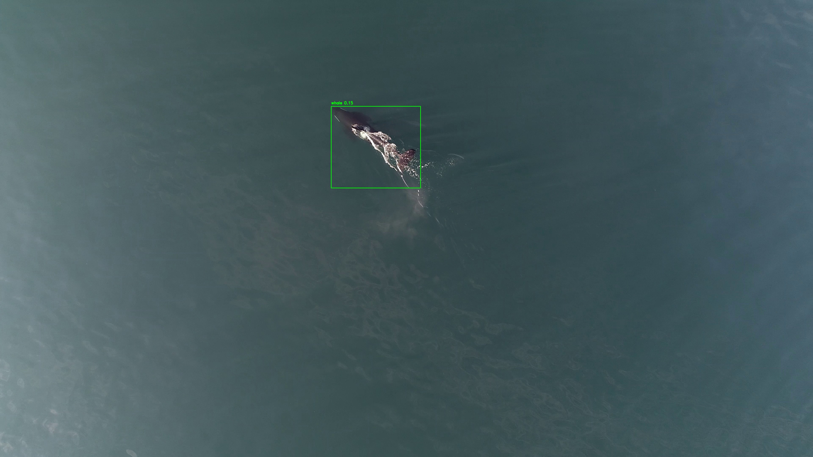
Frame 405 — 1 detection(s)
0.152 whale
bbox: 1564,502 → 1986,888 (422×386px)

Frame 420 — 2 detection(s)
0.200 whale
bbox: 1505,435 → 2003,864 (498×429px)
0.154 whale
bbox: 1505,439 → 1710,575 (205×136px)
merged with: dorsal fin:0.12
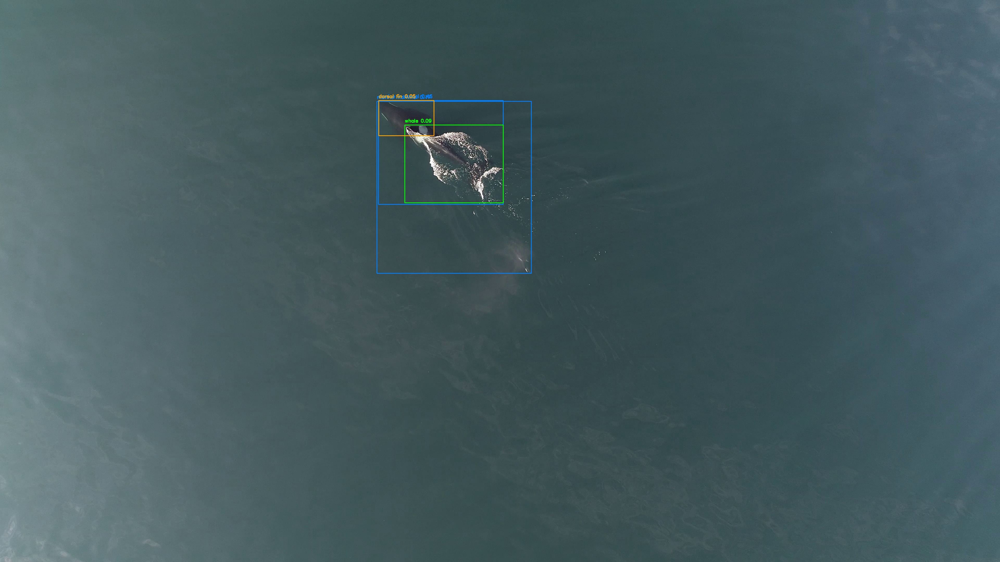
Frame 435 — 3 detection(s)
0.461 marine mammal
bbox: 1453,386 → 1932,785 (479×399px)
merged with: whale:0.09
0.166 marine mammal
bbox: 1447,389 → 2040,1050 (593×661px)
0.053 dorsal fin
bbox: 1454,386 → 1666,521 (212×135px)

Frame 450 — 2 detection(s)
0.150 marine mammal
bbox: 1414,359 → 1925,826 (511×467px)
merged with: whale:0.12
0.125 whale
bbox: 1503,446 → 1863,705 (360×259px)
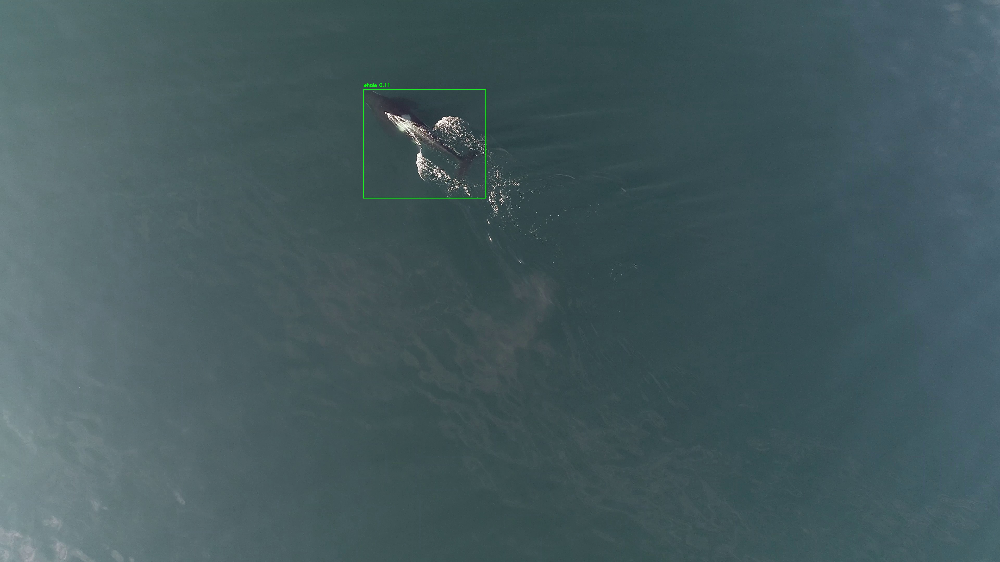
Frame 465 — 1 detection(s)
0.110 whale
bbox: 1395,343 → 1865,761 (470×418px)

Frame 480 — 1 detection(s)
0.079 whale
bbox: 1386,318 → 1859,694 (473×376px)
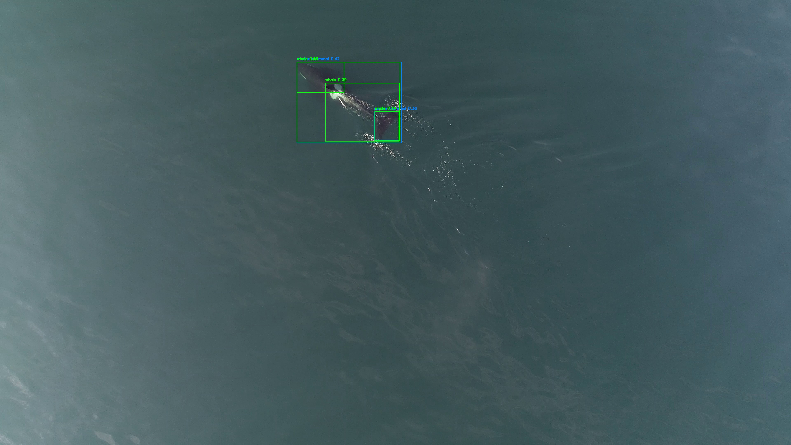
Frame 495 — 3 detection(s)
0.421 marine mammal
bbox: 1441,301 → 1948,693 (507×392px)
merged with: whale:0.09
0.363 marine mammal
bbox: 1816,542 → 1938,679 (122×137px)
merged with: whale:0.14
0.094 whale
bbox: 1441,301 → 1670,448 (229×147px)

Frame 510 — 2 detection(s)
0.879 marine mammal
bbox: 1550,305 → 2054,675 (504×370px)
0.056 whale
bbox: 1711,408 → 2046,667 (335×259px)
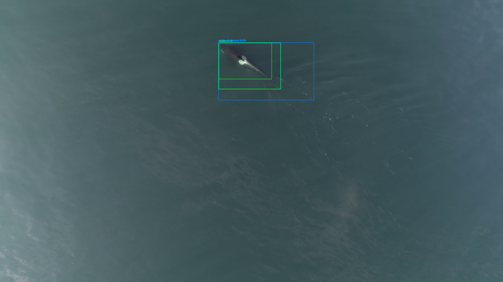
Frame 525 — 1 detection(s)
0.312 marine mammal
bbox: 1671,327 → 2141,683 (470×356px)
merged with: whale:0.12

Frame 540 — 1 detection(s)
0.462 whale
bbox: 1770,341 → 2226,688 (456×347px)
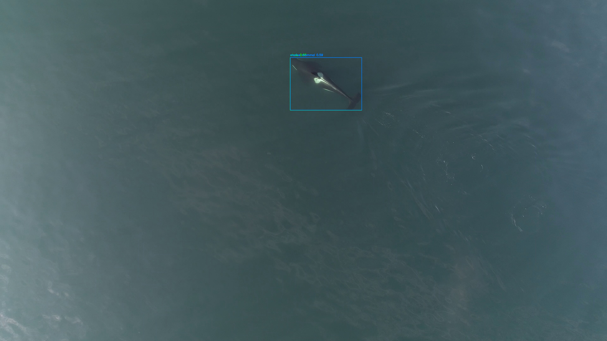
Frame 555 — 1 detection(s)
0.661 whale
bbox: 1835,364 → 2288,698 (453×334px)
merged with: marine mammal:0.59

Frame 570 — 1 detection(s)
0.327 marine mammal
bbox: 1876,440 → 2341,793 (465×353px)
merged with: whale:0.30
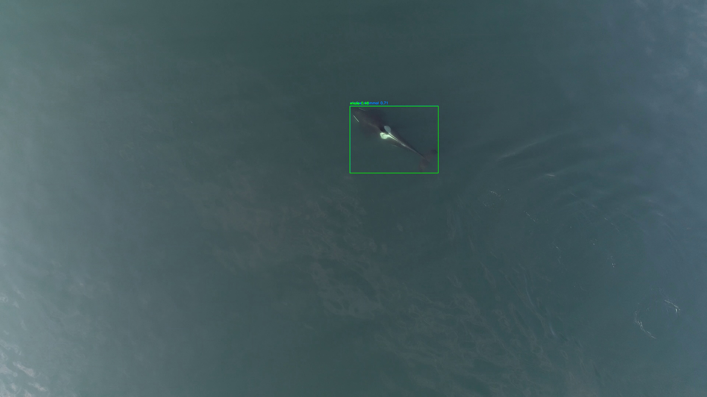
Frame 585 — 1 detection(s)
0.714 marine mammal
bbox: 1901,576 → 2380,941 (479×365px)
merged with: whale:0.46

Frame 600 — 1 detection(s)
0.455 marine mammal
bbox: 1910,723 → 2379,1077 (469×354px)
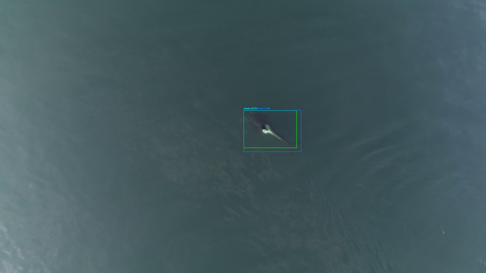
Frame 615 — 1 detection(s)
0.586 whale
bbox: 1926,874 → 2343,1169 (417×295px)
merged with: marine mammal:0.49

Frame 630 — 1 detection(s)
0.609 whale
bbox: 1898,912 → 2346,1252 (448×340px)
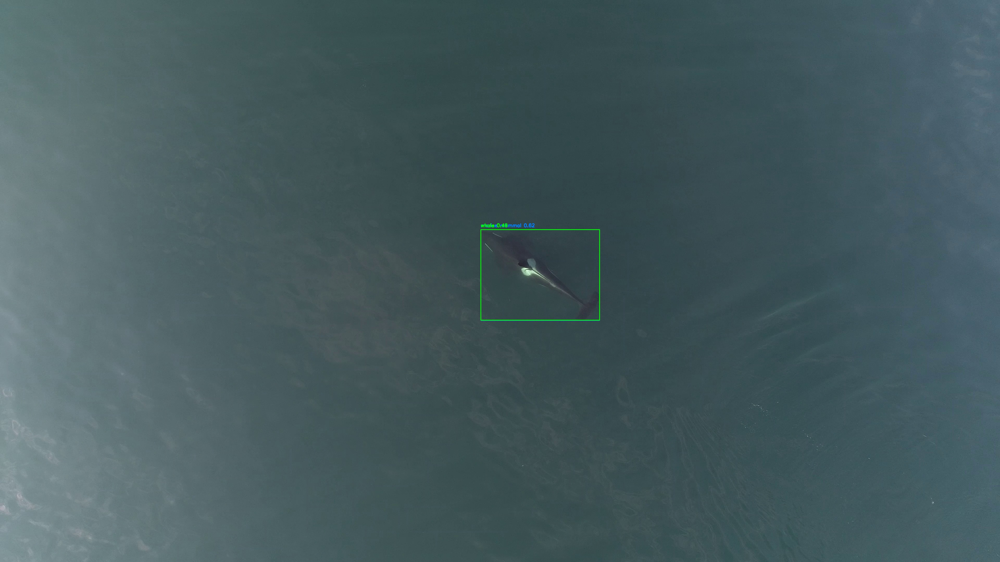
Frame 645 — 1 detection(s)
0.621 marine mammal
bbox: 1846,882 → 2302,1231 (456×349px)
merged with: whale:0.49

Frame 660 — 1 detection(s)
0.416 marine mammal
bbox: 1802,849 → 2269,1197 (467×348px)
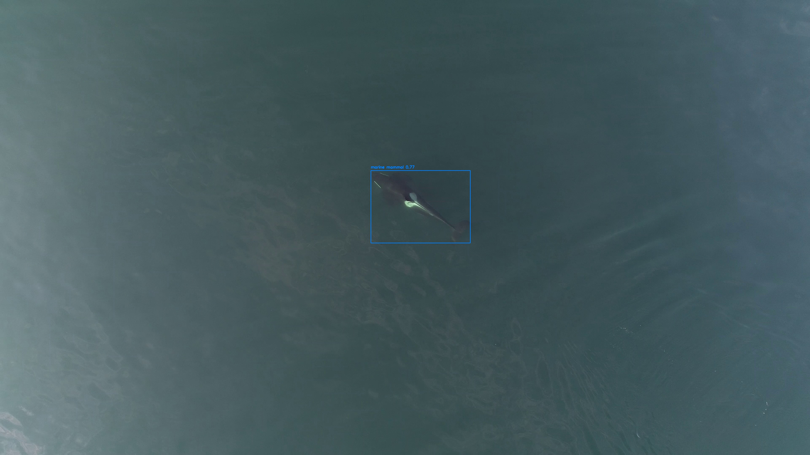
Frame 675 — 1 detection(s)
0.767 marine mammal
bbox: 1758,809 → 2229,1153 (471×344px)

Frame 690 — 1 detection(s)
0.617 marine mammal
bbox: 1706,770 → 2159,1114 (453×344px)
merged with: whale:0.23
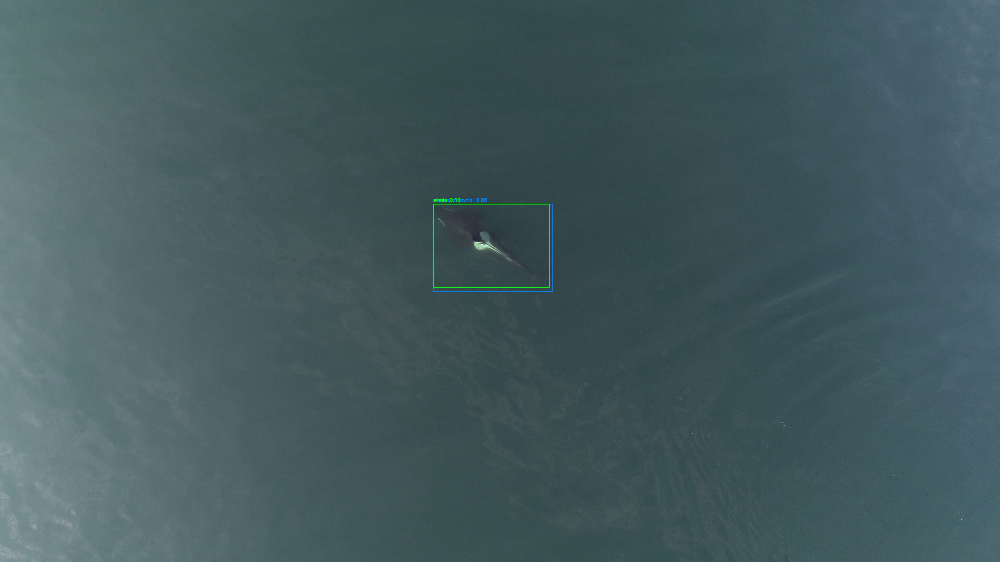
Frame 705 — 1 detection(s)
0.857 marine mammal
bbox: 1663,784 → 2120,1120 (457×336px)
merged with: whale:0.10

Frame 720 — 1 detection(s)
0.664 marine mammal
bbox: 1617,820 → 2078,1156 (461×336px)
merged with: whale:0.43
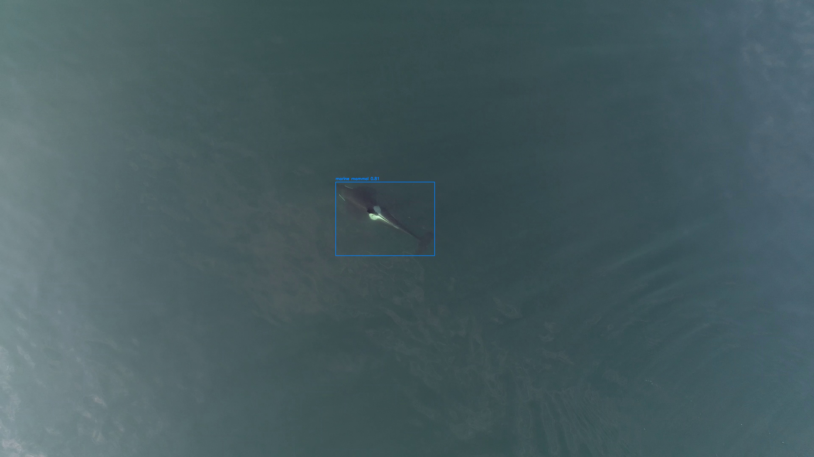
Frame 735 — 1 detection(s)
0.807 marine mammal
bbox: 1583,860 → 2050,1208 (467×348px)

Frame 750 — 1 detection(s)
0.534 marine mammal
bbox: 1539,915 → 2016,1257 (477×342px)
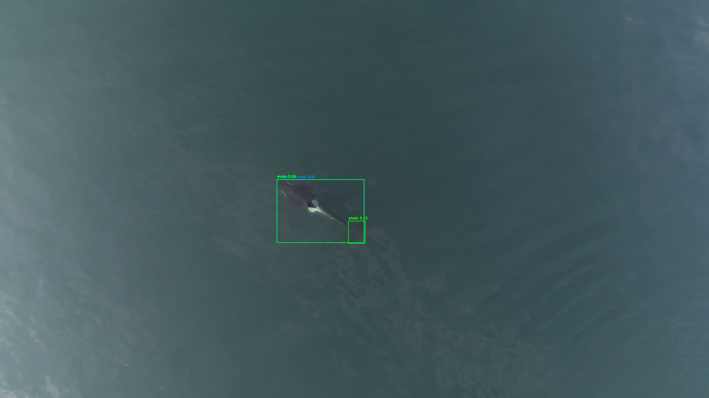
Frame 765 — 2 detection(s)
0.837 marine mammal
bbox: 1501,975 → 1973,1317 (472×342px)
merged with: whale:0.29
0.119 whale
bbox: 1887,1199 → 1978,1321 (91×122px)

Frame 780 — 1 detection(s)
0.302 whale
bbox: 1487,1004 → 1964,1338 (477×334px)
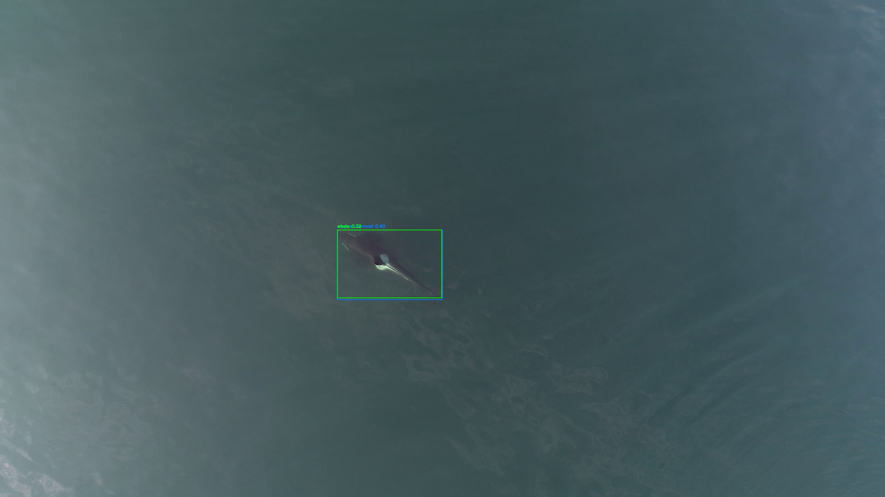
Frame 795 — 1 detection(s)
0.404 marine mammal
bbox: 1463,999 → 1920,1302 (457×303px)
merged with: whale:0.32

Frame 810 — 1 detection(s)
0.402 whale
bbox: 1441,977 → 1925,1285 (484×308px)
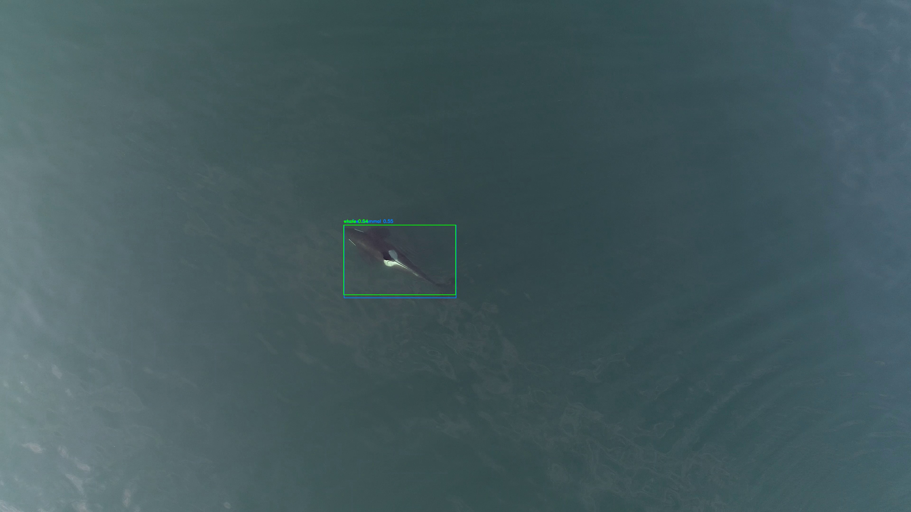
Frame 825 — 1 detection(s)
0.548 marine mammal
bbox: 1450,949 → 1922,1256 (472×307px)
merged with: whale:0.54

Frame 840 — 1 detection(s)
0.237 marine mammal
bbox: 1455,920 → 1935,1252 (480×332px)
merged with: whale:0.19
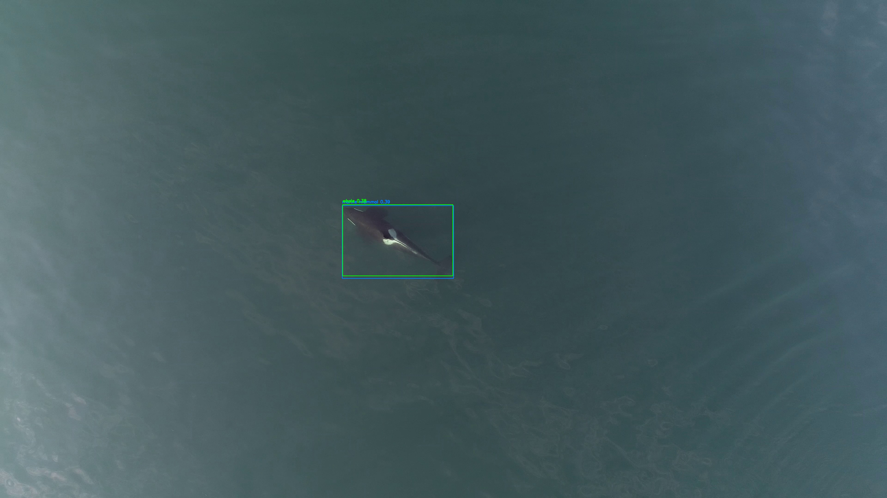
Frame 855 — 1 detection(s)
0.386 marine mammal
bbox: 1481,891 → 1963,1207 (482×316px)
merged with: whale:0.38

Frame 870 — 1 detection(s)
0.385 whale
bbox: 1518,857 → 2007,1189 (489×332px)

Frame 900 — 1 detection(s)
0.137 whale
bbox: 1587,817 → 2083,1156 (496×339px)
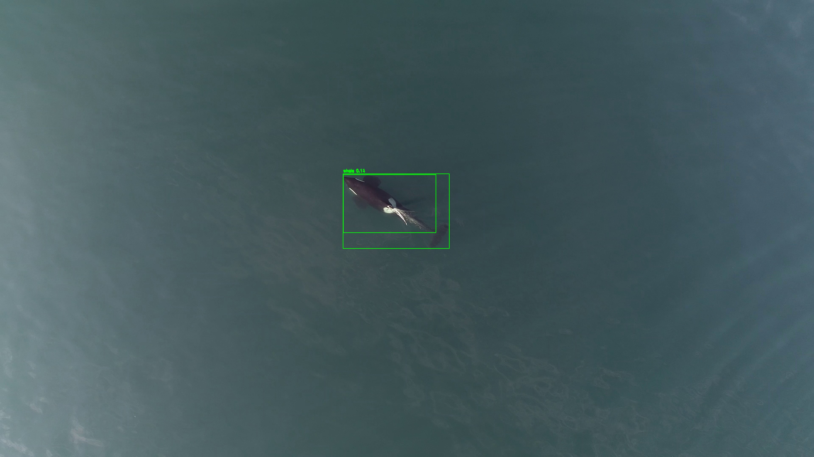
Frame 915 — 1 detection(s)
0.136 whale
bbox: 1619,825 → 2056,1099 (437×274px)

Frame 930 — 1 detection(s)
0.092 whale
bbox: 1617,810 → 2109,1163 (492×353px)
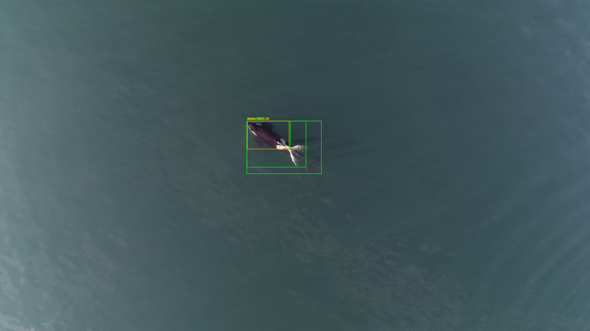
Frame 945 — 2 detection(s)
0.227 whale
bbox: 1606,789 → 2091,1133 (485×344px)
0.122 whale
bbox: 1608,790 → 1890,972 (282×182px)
merged with: dorsal fin:0.09

Frame 960 — 1 detection(s)
0.310 whale
bbox: 1574,765 → 2049,1105 (475×340px)
merged with: marine mammal:0.12
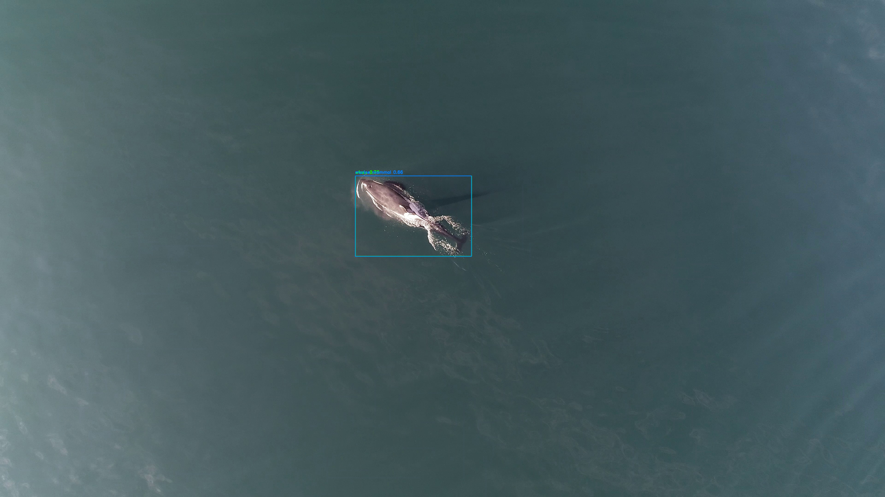
Frame 975 — 1 detection(s)
0.762 whale
bbox: 1542,764 → 2046,1113 (504×349px)
merged with: marine mammal:0.66

Frame 990 — 1 detection(s)
0.650 whale
bbox: 1529,819 → 2055,1180 (526×361px)
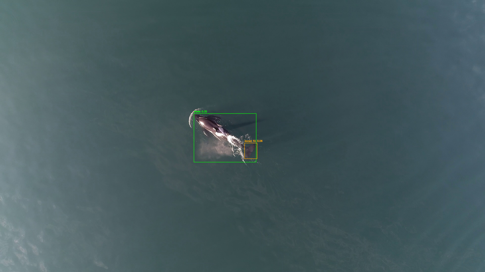
Frame 1005 — 2 detection(s)
0.347 whale
bbox: 1535,901 → 2028,1287 (493×386px)
0.062 dorsal fin
bbox: 1936,1135 → 2035,1260 (99×125px)

Frame 1020 — 1 detection(s)
0.187 whale
bbox: 1523,988 → 1989,1369 (466×381px)
merged with: marine mammal:0.12
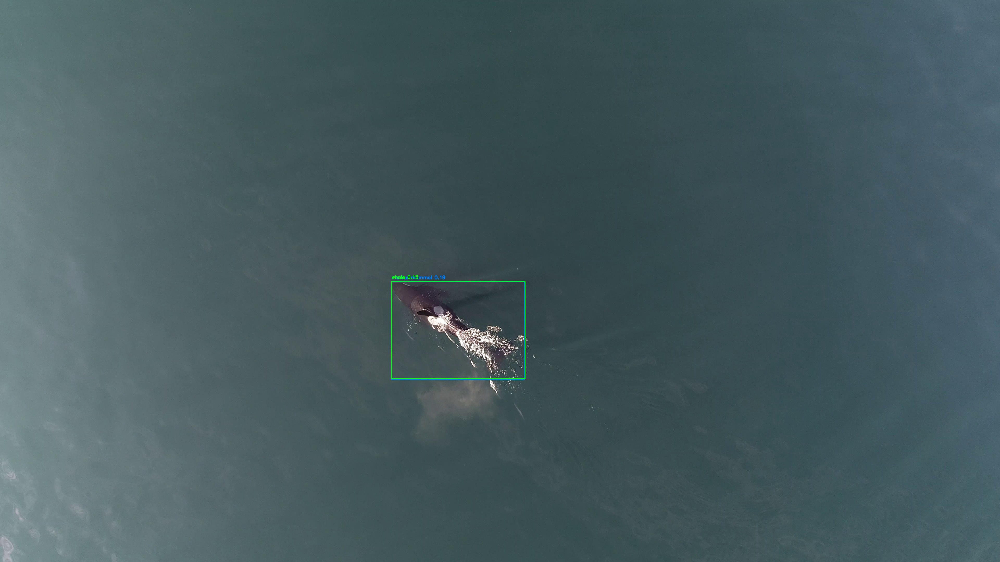
Frame 1035 — 1 detection(s)
0.194 marine mammal
bbox: 1503,1082 → 2013,1459 (510×377px)
merged with: whale:0.15

Frame 1050 — 2 detection(s)
0.135 whale
bbox: 1482,1165 → 1803,1379 (321×214px)
0.083 whale
bbox: 1484,1164 → 2039,1523 (555×359px)
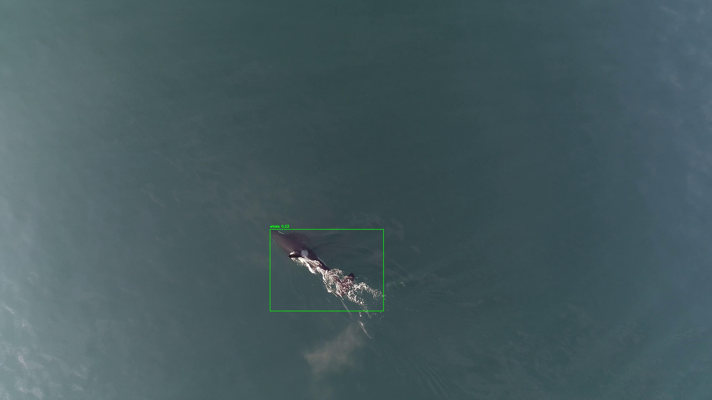
Frame 1065 — 1 detection(s)
0.227 whale
bbox: 1456,1238 → 2068,1679 (612×441px)

Frame 1080 — 3 detection(s)
0.162 marine mammal
bbox: 1561,1383 → 1607,1435 (46×52px)
0.106 whale
bbox: 1445,1258 → 1956,1656 (511×398px)
0.101 dorsal fin
bbox: 1446,1258 → 1729,1435 (283×177px)
merged with: whale:0.10
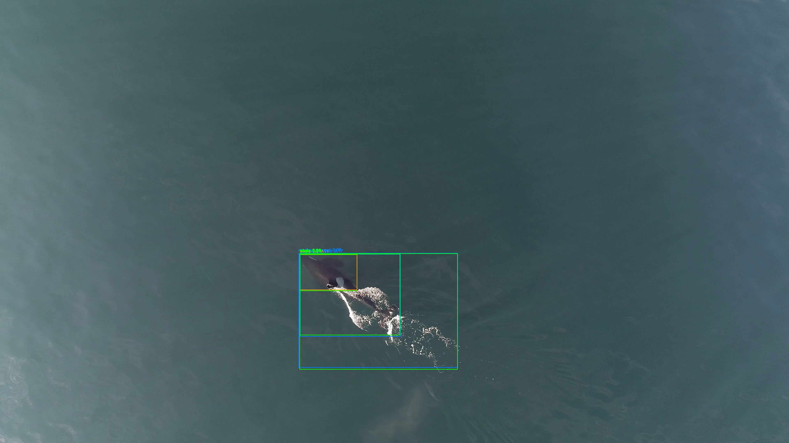
Frame 1095 — 3 detection(s)
0.312 whale
bbox: 1459,1241 → 1737,1417 (278×176px)
merged with: dorsal fin:0.11
0.174 marine mammal
bbox: 1461,1239 → 1948,1640 (487×401px)
merged with: whale:0.06
0.082 marine mammal
bbox: 1453,1234 → 2227,1791 (774×557px)
merged with: whale:0.06

Frame 1110 — 3 detection(s)
0.509 whale
bbox: 1471,1167 → 1737,1372 (266×205px)
0.085 marine mammal
bbox: 1470,1167 → 1910,1559 (440×392px)
0.066 marine mammal
bbox: 1578,1307 → 2242,1919 (664×612px)
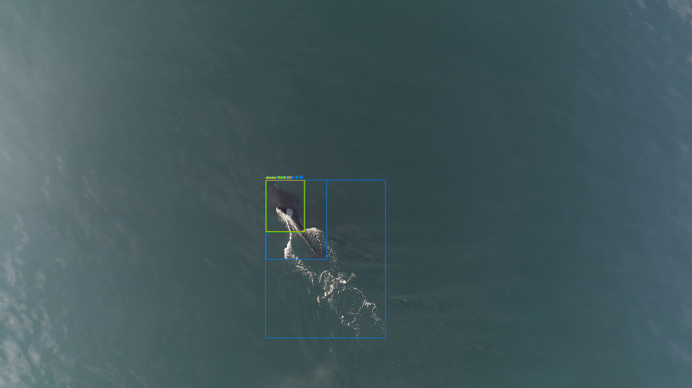
Frame 1125 — 3 detection(s)
0.416 marine mammal
bbox: 1476,1002 → 1812,1443 (336×441px)
0.175 marine mammal
bbox: 1473,1002 → 2138,1881 (665×879px)
0.080 whale
bbox: 1477,1004 → 1687,1291 (210×287px)
merged with: dorsal fin:0.05

Frame 1140 — 2 detection(s)
0.155 whale
bbox: 1549,816 → 1704,1148 (155×332px)
merged with: marine mammal:0.11
0.073 marine mammal
bbox: 1501,817 → 1768,1350 (267×533px)
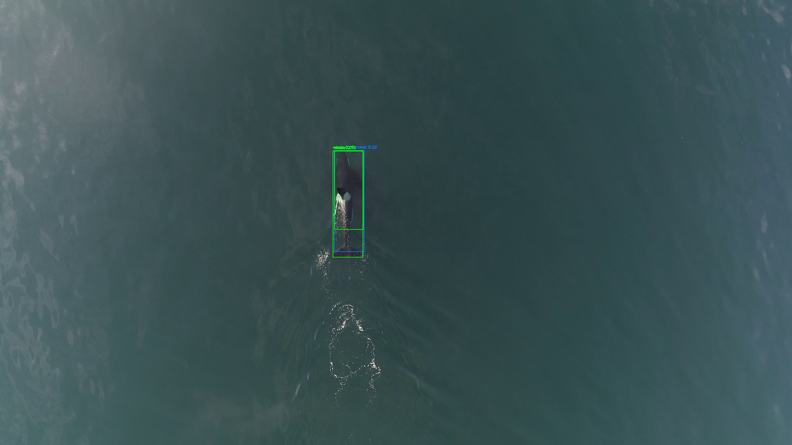
Frame 1155 — 1 detection(s)
0.224 marine mammal
bbox: 1620,730 → 1765,1221 (145×491px)
merged with: whale:0.07

Frame 1170 — 1 detection(s)
0.505 marine mammal
bbox: 1640,767 → 1801,1309 (161×542px)
merged with: whale:0.14
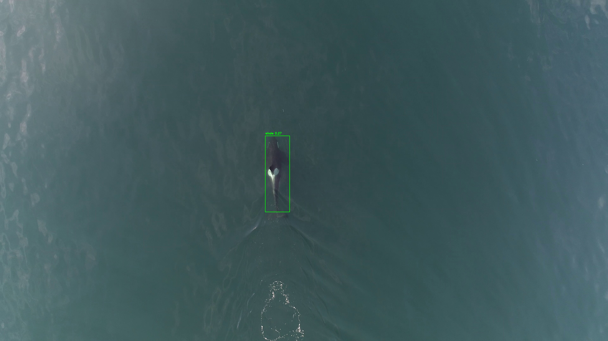
Frame 1185 — 1 detection(s)
0.267 whale
bbox: 1675,860 → 1829,1342 (154×482px)

Frame 1200 — 1 detection(s)
0.069 whale
bbox: 1700,849 → 1839,1321 (139×472px)
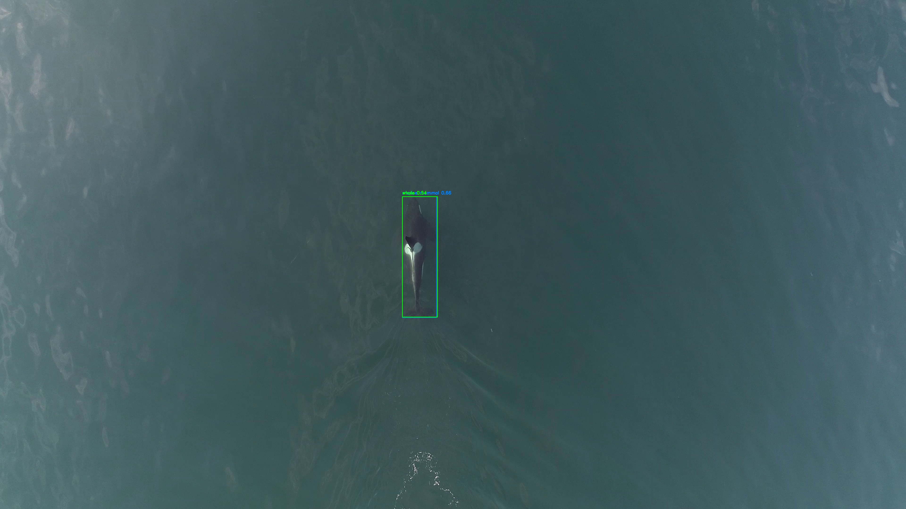
Frame 1215 — 1 detection(s)
0.659 marine mammal
bbox: 1705,834 → 1850,1347 (145×513px)
merged with: whale:0.54

Frame 1230 — 1 detection(s)
0.289 whale
bbox: 1713,839 → 1862,1327 (149×488px)
merged with: marine mammal:0.22
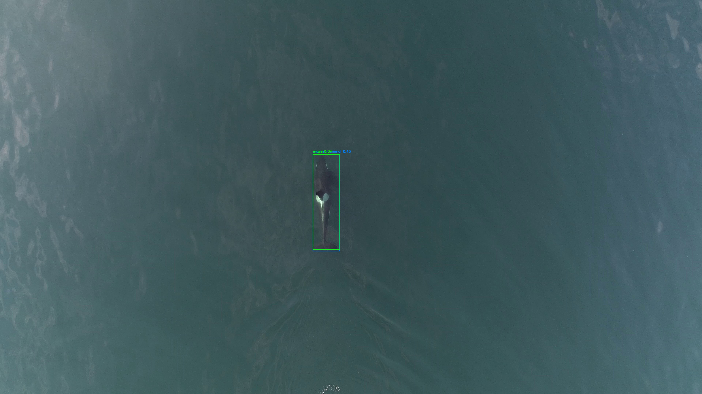
Frame 1245 — 1 detection(s)
0.428 marine mammal
bbox: 1711,846 → 1857,1376 (146×530px)
merged with: whale:0.34

Frame 1260 — 1 detection(s)
0.333 marine mammal
bbox: 1718,862 → 1865,1391 (147×529px)
merged with: whale:0.18
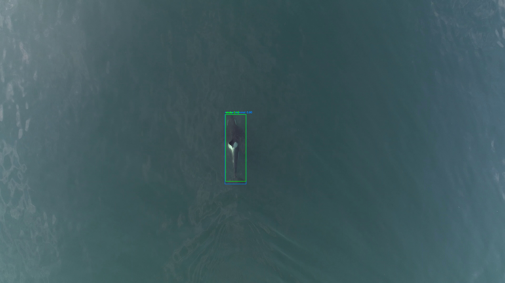
Frame 1275 — 1 detection(s)
0.905 marine mammal
bbox: 1710,873 → 1871,1404 (161×531px)
merged with: whale:0.15

Frame 1290 — 1 detection(s)
0.092 whale
bbox: 1708,890 → 1872,1400 (164×510px)
merged with: marine mammal:0.07
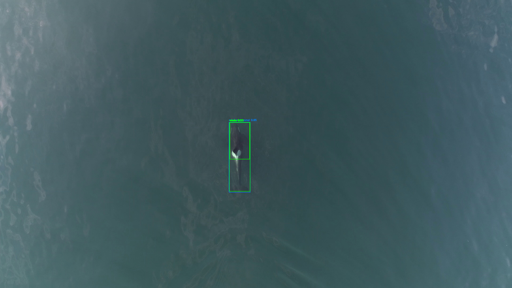
Frame 1305 — 2 detection(s)
0.650 marine mammal
bbox: 1717,916 → 1876,1442 (159×526px)
merged with: whale:0.21
0.065 whale
bbox: 1724,919 → 1872,1193 (148×274px)

Frame 1320 — 1 detection(s)
0.459 marine mammal
bbox: 1728,928 → 1892,1416 (164×488px)
merged with: whale:0.28
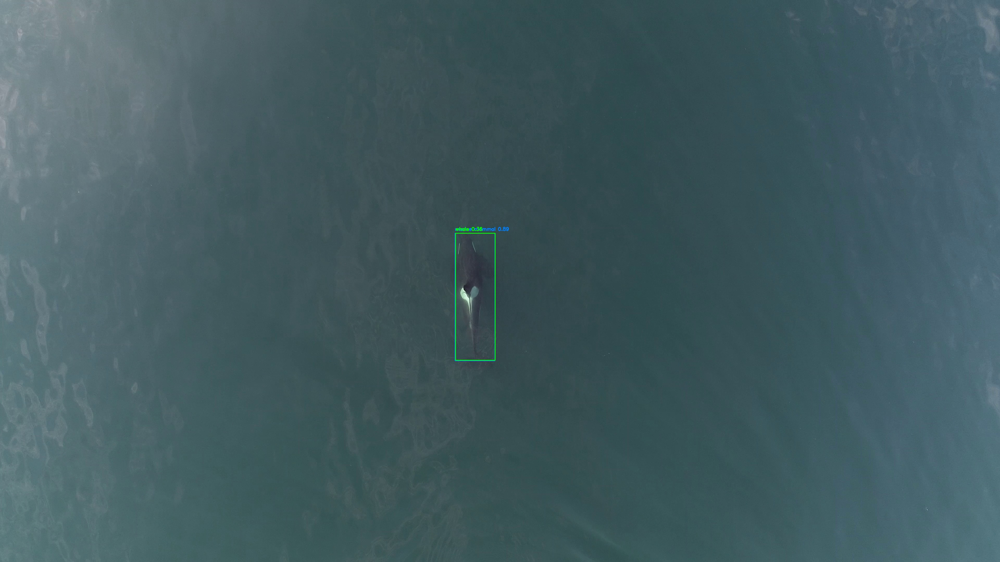
Frame 1335 — 1 detection(s)
0.892 marine mammal
bbox: 1747,896 → 1900,1386 (153×490px)
merged with: whale:0.36

Frame 1350 — 1 detection(s)
0.098 marine mammal
bbox: 1754,839 → 1913,1312 (159×473px)
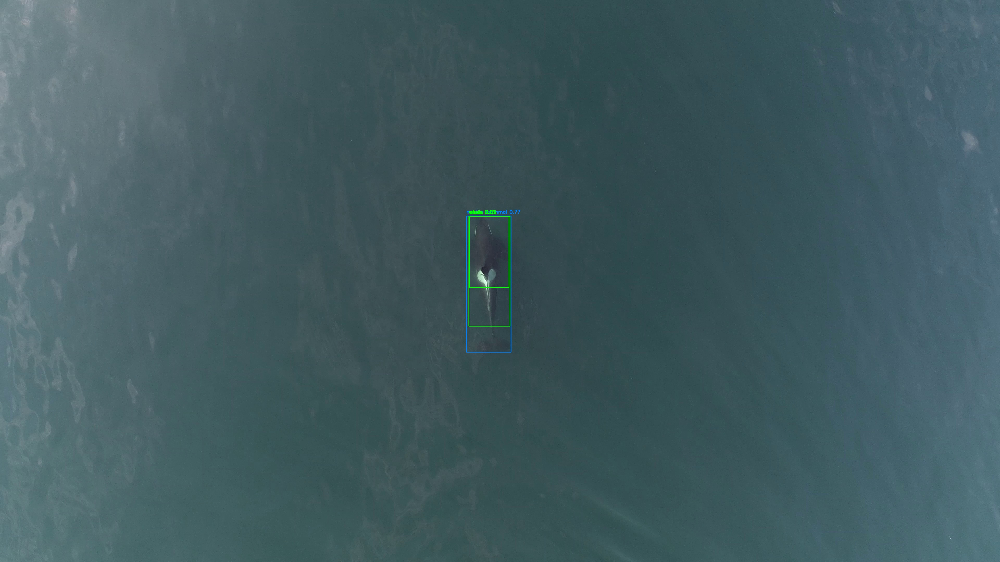
Frame 1365 — 2 detection(s)
0.770 marine mammal
bbox: 1791,830 → 1962,1353 (171×523px)
merged with: whale:0.07
0.050 whale
bbox: 1802,831 → 1954,1104 (152×273px)

Frame 1380 — 1 detection(s)
0.736 marine mammal
bbox: 1866,885 → 2018,1411 (152×526px)
merged with: whale:0.50
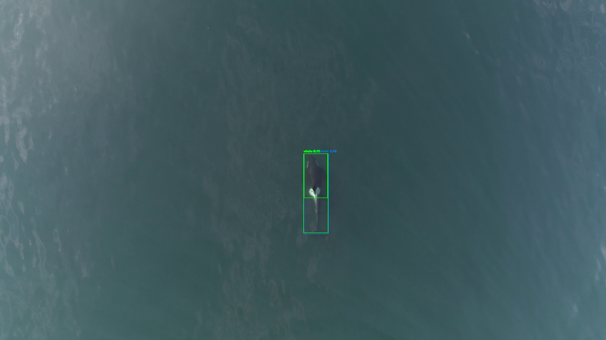
Frame 1395 — 1 detection(s)
0.465 marine mammal
bbox: 1925,976 → 2081,1485 (156×509px)
merged with: whale:0.11

Frame 1410 — 1 detection(s)
0.329 marine mammal
bbox: 1999,1107 → 2156,1629 (157×522px)
merged with: whale:0.07
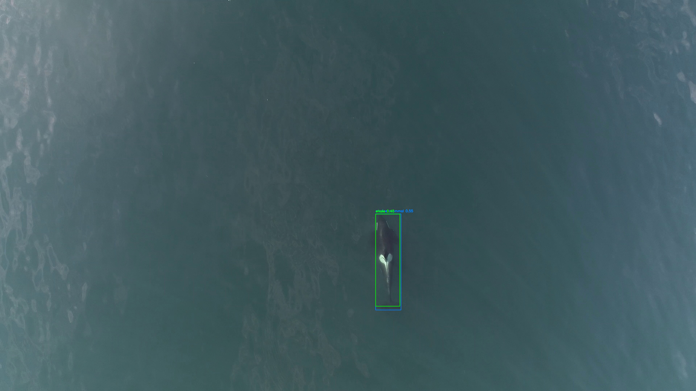
Frame 1425 — 1 detection(s)
0.547 marine mammal
bbox: 2072,1181 → 2212,1712 (140×531px)
merged with: whale:0.45

Frame 1440 — 2 detection(s)
0.534 marine mammal
bbox: 2074,1163 → 2251,1681 (177×518px)
merged with: whale:0.24
0.061 whale
bbox: 2081,1164 → 2242,1420 (161×256px)
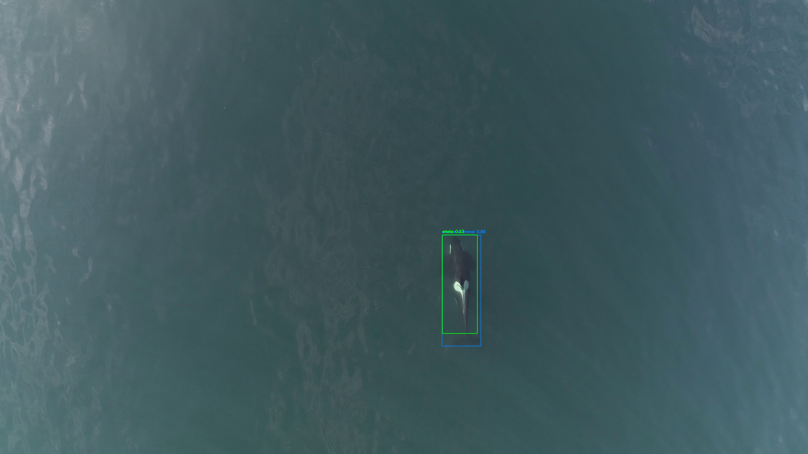
Frame 1455 — 1 detection(s)
0.854 marine mammal
bbox: 2100,1118 → 2285,1646 (185×528px)
merged with: whale:0.23

Frame 1470 — 1 detection(s)
0.747 marine mammal
bbox: 2107,1054 → 2280,1580 (173×526px)
merged with: whale:0.33
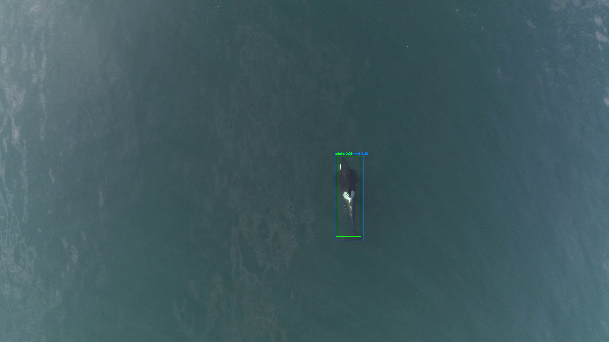
Frame 1485 — 1 detection(s)
0.803 marine mammal
bbox: 2113,986 → 2290,1521 (177×535px)
merged with: whale:0.05

Frame 1500 — 1 detection(s)
0.494 whale
bbox: 2115,922 → 2265,1395 (150×473px)
merged with: marine mammal:0.28
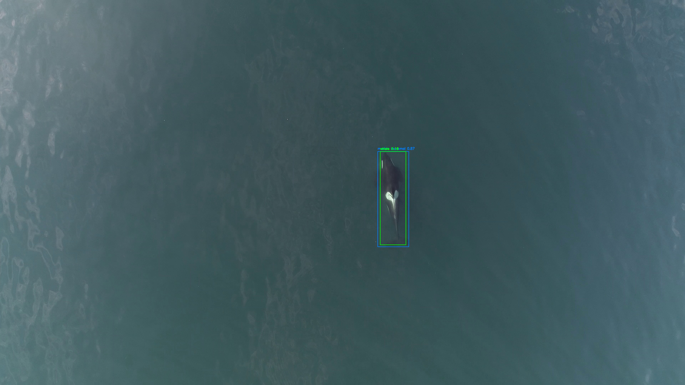
Frame 1515 — 1 detection(s)
0.875 marine mammal
bbox: 2117,849 → 2291,1384 (174×535px)
merged with: whale:0.18

Frame 1530 — 1 detection(s)
0.652 marine mammal
bbox: 2095,787 → 2289,1320 (194×533px)
merged with: whale:0.60
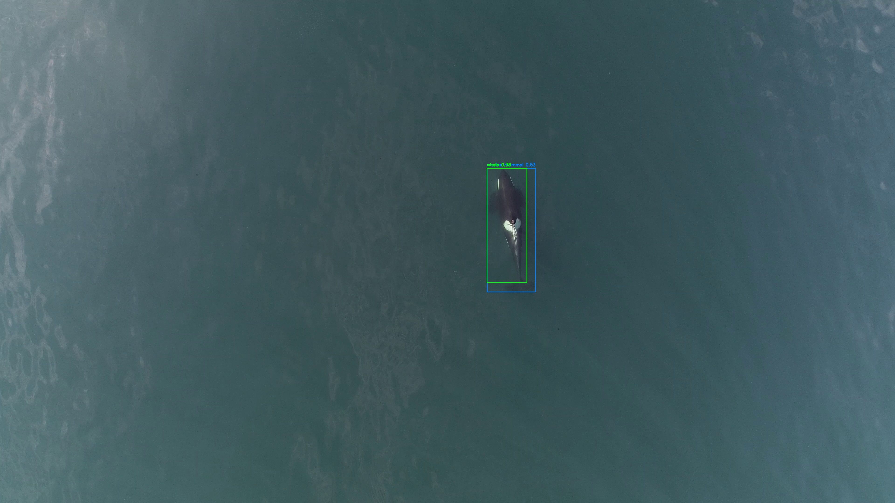
Frame 1545 — 1 detection(s)
0.529 marine mammal
bbox: 2090,723 → 2297,1253 (207×530px)
merged with: whale:0.38

Frame 1560 — 1 detection(s)
0.413 marine mammal
bbox: 2095,659 → 2296,1190 (201×531px)
merged with: whale:0.09
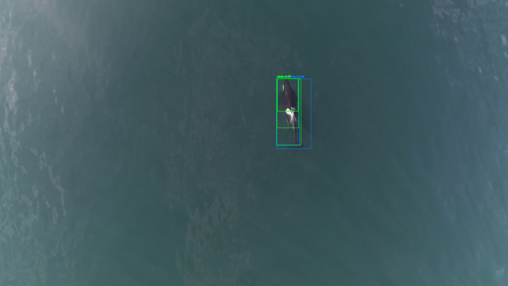
Frame 1575 — 2 detection(s)
0.339 marine mammal
bbox: 2093,594 → 2264,1099 (171×505px)
merged with: whale:0.10
0.068 whale
bbox: 2096,594 → 2253,840 (157×246px)

Frame 1590 — 1 detection(s)
0.059 whale
bbox: 2093,524 → 2317,1064 (224×540px)
Frame 1605 — 1 detection(s)
0.104 whale
bbox: 2094,462 → 2290,926 (196×464px)
merged with: marine mammal:0.07

Frame 1620 — 1 detection(s)
0.161 whale
bbox: 2101,398 → 2294,795 (193×397px)
Frame 1635 — 1 detection(s)
0.301 marine mammal
bbox: 2099,365 → 2312,917 (213×552px)
merged with: whale:0.14

Frame 1650 — 1 detection(s)
0.281 whale
bbox: 2113,369 → 2307,844 (194×475px)
merged with: marine mammal:0.11
Frame 1665 — 1 detection(s)
0.304 whale
bbox: 2108,404 → 2314,945 (206×541px)
merged with: marine mammal:0.21

Frame 1680 — 1 detection(s)
0.248 marine mammal
bbox: 2106,481 → 2314,1044 (208×563px)
merged with: whale:0.16
Frame 1695 — 1 detection(s)
0.081 marine mammal
bbox: 2079,541 → 2316,1149 (237×608px)

Frame 1710 — 1 detection(s)
0.324 marine mammal
bbox: 2095,597 → 2297,1118 (202×521px)
merged with: whale:0.07
Frame 1725 — 1 detection(s)
0.373 marine mammal
bbox: 2094,584 → 2339,1112 (245×528px)
merged with: whale:0.20

Frame 1740 — 1 detection(s)
0.118 whale
bbox: 2094,574 → 2378,1146 (284×572px)
Frame 1755 — 1 detection(s)
0.169 marine mammal
bbox: 2107,597 → 2302,1133 (195×536px)
merged with: whale:0.10

Frame 1770 — 1 detection(s)
0.065 whale
bbox: 2120,646 → 2254,878 (134×232px)
Frame 1785 — 2 detection(s)
0.197 dorsal fin
bbox: 2075,711 → 2254,935 (179×224px)
merged with: whale:0.16
0.060 marine mammal
bbox: 2073,710 → 2309,1273 (236×563px)
merged with: whale:0.06

Frame 1800 — 2 detection(s)
0.193 whale
bbox: 2066,777 → 2244,1012 (178×235px)
merged with: dorsal fin:0.18
0.175 whale
bbox: 2082,928 → 2328,1394 (246×466px)
merged with: marine mammal:0.07
Frame 1815 — 4 detection(s)
0.214 marine mammal
bbox: 2019,949 → 2476,1838 (457×889px)
0.170 dorsal fin
bbox: 2059,844 → 2227,1067 (168×223px)
merged with: whale:0.12
0.141 marine mammal
bbox: 2052,1012 → 2347,1544 (295×532px)
0.069 marine mammal
bbox: 2056,845 → 2246,1348 (190×503px)

Frame 1830 — 2 detection(s)
0.214 whale
bbox: 2051,911 → 2206,1129 (155×218px)
0.080 marine mammal
bbox: 2036,908 → 2297,1432 (261×524px)
Frame 1845 — 3 detection(s)
0.714 marine mammal
bbox: 2034,953 → 2258,1466 (224×513px)
0.165 whale
bbox: 2038,953 → 2194,1164 (156×211px)
0.128 marine mammal
bbox: 2102,1125 → 2257,1465 (155×340px)

Frame 1860 — 1 detection(s)
0.575 marine mammal
bbox: 2024,922 → 2263,1432 (239×510px)
merged with: whale:0.31
Frame 1875 — 3 detection(s)
0.547 marine mammal
bbox: 2008,869 → 2266,1381 (258×512px)
merged with: whale:0.21
0.076 whale
bbox: 2010,870 → 2166,1090 (156×220px)
0.065 whale
bbox: 2136,1294 → 2264,1380 (128×86px)

Frame 1890 — 2 detection(s)
0.696 marine mammal
bbox: 1988,813 → 2261,1323 (273×510px)
merged with: whale:0.34
0.071 dorsal fin
bbox: 2130,1235 → 2258,1328 (128×93px)
merged with: whale:0.06
Frame 1905 — 2 detection(s)
0.431 marine mammal
bbox: 1971,751 → 2251,1255 (280×504px)
merged with: whale:0.32
0.072 whale
bbox: 2131,1177 → 2249,1256 (118×79px)
merged with: dorsal fin:0.06

Frame 1920 — 2 detection(s)
0.273 marine mammal
bbox: 1948,693 → 2236,1182 (288×489px)
merged with: whale:0.17
0.103 whale
bbox: 2115,1117 → 2235,1195 (120×78px)
Frame 1935 — 3 detection(s)
0.691 marine mammal
bbox: 1924,640 → 2214,1121 (290×481px)
merged with: whale:0.11
0.074 whale
bbox: 2102,1055 → 2224,1137 (122×82px)
0.051 whale
bbox: 1923,639 → 2099,854 (176×215px)

Frame 1950 — 1 detection(s)
0.764 marine mammal
bbox: 1900,582 → 2202,1059 (302×477px)
merged with: whale:0.22
Frame 1965 — 1 detection(s)
0.514 marine mammal
bbox: 1875,530 → 2114,930 (239×400px)
merged with: whale:0.39
Frame 1995 — 2 detection(s)
0.610 marine mammal
bbox: 1835,418 → 2140,901 (305×483px)
merged with: whale:0.05
0.063 whale
bbox: 2037,823 → 2141,902 (104×79px)

Frame 2010 — 1 detection(s)
0.188 marine mammal
bbox: 1820,358 → 2127,856 (307×498px)
Frame 2025 — 1 detection(s)
0.750 marine mammal
bbox: 1791,382 → 2090,871 (299×489px)

Frame 2040 — 1 detection(s)
0.557 marine mammal
bbox: 1780,432 → 2055,924 (275×492px)
merged with: whale:0.37
Frame 2055 — 2 detection(s)
0.606 whale
bbox: 1769,484 → 1994,942 (225×458px)
merged with: marine mammal:0.35
0.077 whale
bbox: 1922,909 → 2036,983 (114×74px)
Frame 2085 — 1 detection(s)
0.699 marine mammal
bbox: 1763,556 → 2033,1052 (270×496px)
merged with: whale:0.16

Frame 2100 — 1 detection(s)
0.092 marine mammal
bbox: 1764,512 → 2047,1004 (283×492px)
Frame 2115 — 1 detection(s)
0.493 marine mammal
bbox: 1774,490 → 2053,1027 (279×537px)
merged with: whale:0.07

Frame 2130 — 1 detection(s)
0.696 marine mammal
bbox: 1752,472 → 2041,1036 (289×564px)
merged with: whale:0.11
Frame 2145 — 2 detection(s)
0.373 marine mammal
bbox: 1733,448 → 2055,1051 (322×603px)
0.064 marine mammal
bbox: 1807,490 → 1954,846 (147×356px)

Frame 2160 — 1 detection(s)
0.050 marine mammal
bbox: 1738,419 → 2126,1071 (388×652px)
Frame 2175 — 1 detection(s)
0.063 marine mammal
bbox: 1778,446 → 2148,1211 (370×765px)

Frame 2190 — 1 detection(s)
0.076 marine mammal
bbox: 1833,470 → 2131,1188 (298×718px)
merged with: whale:0.06
Frame 2235 — 3 detection(s)
0.184 whale
bbox: 1864,701 → 2014,932 (150×231px)
0.140 marine mammal
bbox: 1823,743 → 2153,1691 (330×948px)
0.056 marine mammal
bbox: 1828,704 → 2048,1266 (220×562px)

Frame 2250 — 2 detection(s)
0.068 whale
bbox: 1861,719 → 2012,946 (151×227px)
0.065 marine mammal
bbox: 1799,729 → 2171,1786 (372×1057px)
Frame 2265 — 2 detection(s)
0.108 marine mammal
bbox: 1825,1200 → 2191,1924 (366×724px)
0.105 marine mammal
bbox: 1867,748 → 2020,1084 (153×336px)
merged with: whale:0.10

Frame 2280 — 1 detection(s)
0.159 whale
bbox: 1868,780 → 2002,1200 (134×420px)
merged with: marine mammal:0.13
Frame 2295 — 1 detection(s)
0.119 whale
bbox: 1864,842 → 2008,1270 (144×428px)
merged with: marine mammal:0.12
Frame 2325 — 1 detection(s)
0.093 marine mammal
bbox: 1871,979 → 2024,1418 (153×439px)

Frame 2340 — 1 detection(s)
0.069 marine mammal
bbox: 1872,978 → 2011,1409 (139×431px)
Frame 2355 — 1 detection(s)
0.247 marine mammal
bbox: 1871,963 → 2012,1407 (141×444px)

Frame 2370 — 1 detection(s)
0.224 marine mammal
bbox: 1883,1082 → 2005,1374 (122×292px)

Frame 2400 — 1 detection(s)
0.136 marine mammal
bbox: 1883,1009 → 1976,1190 (93×181px)